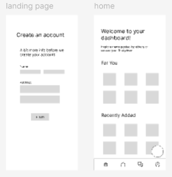
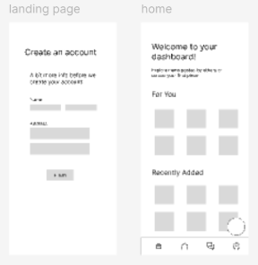

After returning from a visit to my cousins in Mexico, I noticed a strong need for affordable, quality clothing in some communities. This inspired me to design a mobile application prototype, Outside Outfits, a platform where users can post or donate clothing for free in exchange for credits or at a very low cost.
The app aims to remove common barriers in secondhand clothing exchange, such as location and shipping costs, by offering free worldwide shipping. From a UX perspective, my goal was to create an intuitive and inclusive experience. I included features like a messaging system so donors can see the impact of their contributions and connect with others globally.
Throughout the design process, I focused on understanding user needs, simplifying interactions, and ensuring accessibility, with the intent of creating a seamless platform that encourages both giving and receiving clothing items across borders.
Role: UI/UX Designer
Purpose: Design project
Project Type: Mobile Application Design with Figma

 
